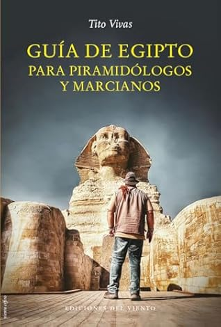

Guía de Egipto para piramidólogos y marcianos
Reseña por Jorge I. Zuluaga

Ver reseña en GoodReads (necesita cuenta)
Al comenzar mi lectura, esperaba disfrutar de otro libro de viajes, uno más tal vez, de uno de mis autores favoritos de este género.
Por el título y los anuncios que había hecho su autor en charlas, cursos y en sus redes sociales, sabía que me encontraría además con una buena dosis de escepticismo científico que, en su estilo característico y con su buen humor -un humor ácido y satírico que, confieso, empece a disfrutar solo con el tiempo, así como se aprende a apreciar el amargor de las aceitunas o la cerveza-, con ese estilo suyo, Tito desmontaría algunas de las sandeces seudocientíficas que se han tejido alrededor del Egipto Antiguo. Muchos de esos mitos, algunos modernos y otros no tanto, han nacido de horrendos mal entendidos, mucha pareidolia por aquí y una buena dosis de ignorancia por allá, resultado de contemplar con sorpresa y estupor los increíbles logros técnicos y humanos de esta admirada y milenaria cultura de la antigüedad.
Pero me equivoqué.
Había más.
Sumado a todo lo anterior, fue una grata sorpresa descubrir en este libro buenas e inesperadas lecciones de filosofía, en especial de teoría del conocimiento y epistemología. Lecciones que, también confieso, no esperaba recibir, o más bien repasar (se supone que también soy científico).
A pesar de que se veían venir por el título y el tema de este libro, no esperaba de verdad que Tito fuera tan lejos en su reflexiones filosóficas: reflexiones sobre el quehacer científico, sobre la Verdad, así en mayúscula, y ante todo, sobre la relación entre la ciencia, las emociones humanas, incluyendo el asombro, y la heterogénea matriz cultural que la rodea.
Pero, ahí no terminan las sorpresas.
Encontré en este libro también la buenas lecciones de historia y de humanismo a las que nos tiene bien acostumbrados Tito a través de sus otros libros, pero que están aquí amplificadas por una narrativa original y "enganchadora". Una muestra muy completa de lo que es la buena literatura de viajes; una que no se reduce a contar anécdotas, describir escenarios geográficos y acompañarlas de sesudas descripciones históricas.
Por si todo lo anterior ya no fuera bastante, lo que más me sorprendió y amé de "Guía de Egipto para piramidólogos y marcianos" fue la historia de una amistad imposible; una amistad sobre la que no puedo entrar en detalles en esta reseña sin arruinarles la experiencia, pero que te saca la rabia, unas buenas risotadas y, como no podía faltar en una verdadera historia humana, una que otra lágrima.
Si, así como lo oyen. Hasta llorar se puede con este libro.
¿Pero cómo logra todo esto Tito? ¿O debería decir Francisco Vivas, historiador, egiptólogo y viajero español?
Quiero aclarar, antes de seguir, que lo "tuteo" porque lo conozco personalmente (no tanto como quisiera). Es más, lo considero, sin su permiso, un amigo. Quizas esta confesión les demuestre que esta reseña no es tan objetiva como debería, pero, ¿hay alguna que realmente lo sea?. En defensa de estos párrafos les invito a leer las reseñas de los libros anteriores de Tito en las que no dude en señalar también los que consideré fueron defectos que no me gustaron (pocos, pero las hubo). Defectos que, a propósito, no descubrí en este: Tito escribe cada vez mejor y esta también es una opinión muy subjetiva.
Repito la pregunta, ¿Cómo logra Tito escribir este libro fascinante en el que combina tantas cosas buenas?
La estrategia es bastante ingeniosa, aunque no diría que es completamente original (¿acaso hay algo que lo sea después de 2500 años de historia de la literatura escrita?).
En "Guía de Egipto para piramidólogos y marcianos" Tito inventa una aventura (que ahora deseo haya sido realidad); un recorrido por los lugares más representativos de Egipto, Abu Simbel, Luxor, Abidós, Déndera, Tell el-Amarna, Saqqara, El Cairo, acompañado, al principio por accidente y después por razones que se van revelando en el viaje, por un personaje que parece todo lo contrario a él, es decir, un personaje ciegamente creyente, muy supersticioso y por supuesto desconfiado de la academia y su "dogmatismo".
(A ratos se me ocurrió que Tito construyó este personaje como un anti Tito; es más, hasta un parecido físico parece adivinarse entre ambos, ¡un verdadero Doctor Jekyll y Mr. Hyde en el País de las Dos Tierras!)
En el viaje, Tito y su original compañía, encuentran los monumentos, estelas, estatuas, murales y edificios alrededor de los cuales se han tejido algunas de las más enrevesadas historias seudocientíficas y mágicas sobre el antiguo Egipto. Desfilan por sus páginas, el "milagrosamente" alineado templo de Abu Simbel, la tumba maldita de Tut, la cripta del bombillo o de las berenjenas, el espermatozoide de Min, las tumbas vacías de los toros, las cámaras interiores y los números de las grandes pirámides de Gizah, la antigua y misteriosa Esfinge, entre otros. Algunos de estos monumentos y lugares son muy conocidos; otros seguramente serán completamente nuevos para la mayoría. Un original recorrido por la geografía y la historia de Egipto que creo disfrutarán Kemet Lovers y recién iniciados por igual.
Por entre el recorrido original propuesto por Tito, se van entretejiendo las discusiones filosóficas entre el egiptólogo escéptico pero sensible y su original y creyente compañía. Es justo allí, en esas discusiones, donde aparecen los elementos más atractivos del libro: el contenido filosófico, pero también el contenido humano, los dramas personales, las contradicciones internas del científico y sus "epifanías" epistemológicas ("Quizás no es necesario entenderlo todo; quizás el misterio en si mismo es lo que nos mantiene vivos").
¡Fue mucho, mucho lo que disfrute y aprendí con todas estas cosas! ¡Gracias Tito hermano!
¿Y el final? ¡Uy! Que final.
Puede ser una verdad de perogrullo decir que todo libro debe leerse para llegar al final; pero es que en el caso de "Guía de Egipto para piramidólogos y marcianos" la afirmación no podría ser más cierta. No soy escritor, pero estoy casi seguro que cuando un autor como Tito descubre la manera de cerrar una historia de la forma tan magistral en la que él lo hace en este libro, se debe sentir algo muy cercano a la más pura realización espiritual. Puedo estar exagerando, pero creo que al menos yo, lo sentiría así.
Eso sí, se les advierte: no hay manera de leer ese final sin conmoverse quizás hasta las lagrimas.
Finalmente, les dejo esta frase (fueron muchas más las que señalé y guardaré): "Egipto lleva siglos recibiendo extraterrestres... ¡Solo que somos nosotros!"